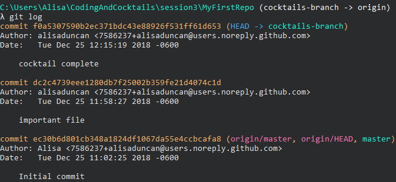
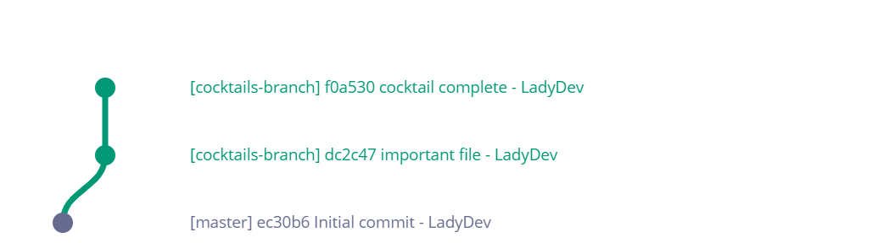
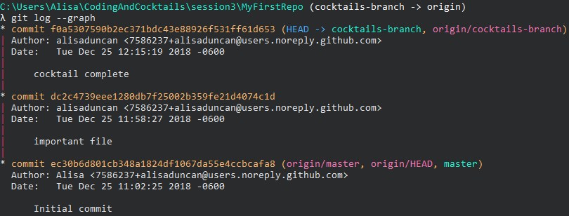

Editing files and push changes
Now we'll see the power of version control by editing files, looking at differences between the revisions, and pushing our changes up to GitHub.
This section will help guide you through the following steps:
Edit files and look at changes
Let's make some more changes and compare differences.
Let's make a change to cocktails.txt. Open Atom by typing
atom ..What's up with that Atom command? When you install Atom it automatically adds itself to your system PATH. The command
atomopens Atom. Adding.tells Atom to open at this file location.Open cocktails.txt. Think of your favorite cocktail and add it at the end of the sentence in cocktails.txt in Atom. Save your file.
We made an edit to an existing file. Let's see what
git statusin the terminal shows.**[terminal] **[prompt LadyDev@Coding&Cocktails]**[path ~/CodingAndCocktails/session3/MyFirstRepo (cocktails-branch)] **[delimiter λ ]**[command git status] On branch cocktails-branch Changes not staged for commit: (use "git add <file>..." to update what will be committed) (use "git checkout -- <file>..." to discard changes in working directory) **[error modified: cocktails.txt] no changes added to commit (use "git add" and/or "git commit -a")We modified a file so let's check out the difference between them. Type
git diff.**[terminal] **[prompt LadyDev@Coding&Cocktails]**[path ~/CodingAndCocktails/session3/MyFirstRepo (cocktails-branch)] **[delimiter λ ]**[command git diff] diff --git a/cocktails.txt b/cocktails.txt index 29a3e24..4d8a785 100644 --- a/cocktails.txt +++ b/cocktails.txt @@ -1 +1 @@ **[error -My favorite cocktail is] **[warning +My favorite cocktail is Code on the Beach.]Git diff shows us the difference in the files. The top line in red with the
-in front of it shows the line removed. The second line with the+in front of it shows the line added.We only see differences when a file is unstaged.
Depending on the amount of changes, your terminal may display the output using a tool called 'less'. To exit out of 'less' type
qin your terminal.In GitKraken, select the top row in the git tree named "//WIP" and then click on cocktails.txt in the Unstaged Files list. Take a look at the diff and compare to what you saw in the terminal.
Resetting a change
Sometimes we change our minds and decide we no longer want a change. We'll learn how to reset a file back to the last commit.
In the terminal, type
git statusto see the status of our change.Now let's stage the file by typing
git add cocktails.txt. Check git status and GitKraken. We see the file is staged.Oops! We weren't ready to stage that file yet! Let's reset it by typing
git reset cocktails.txt. Check git status and GitKraken to see the file is no longer staged.Stage and commit your change. You can use anything you like for the commit message.
Need a little help? Expand this section for guidance.
Typegit add cocktails.txtto stage your change.
Typegit commit -m "cocktail complete"to commit your change.
Pushing our changes to GitHub
Finally, perfection! Let's push those changes up to the remote, in our case, GitHub.
We've made quite a few changes. We can see the history in the command line. Type
git logto see all the changes you made tonight. It should looks similar to this
If we mapped out your commits, your git graph currently looks like this

It shows each commit (with the unique identifier) and the commit message along with the author and date. Notice the top commit also has
(HEAD -> cocktails-branch). This says your own local copy of the "cocktails-branch" branch is at the top commit. Notice the bottom commit has(origin/master, origin/HEAD). This is the last change that your remote, GitHub, is aware of. Your terminal may not show where HEAD is.Your terminal automatically shows the output using 'less'. To exit out of 'less' type
q.In the terminal type
git pushto push our changes to GitHub. That way other people can see our work. Oh oh! We got an error**[terminal] **[prompt LadyDev@Coding&Cocktails]**[path ~/CodingAndCocktails/VersionControl/MyFirstRepo (cocktails-branch)] **[delimiter λ ]**[command git push] fatal: The current branch cocktails-branch has no upstream branch. To push the current branch and set the remote as upstream, use git push --set-upstream origin cocktails-branchThe remote, GitHub, has no knowledge of 'cocktails-branch'. We need to provide the branch name (cocktails-branch) and where to create the branch (origin). We add the flag '--set-upstream' so that the remote has this branch reference and we don't have to provide the 'cocktails-branch' and 'origin' parameters for subsequent
git pushcommands.Follow the instructions in the error and type
git push --set-upstream origin cocktails-branch.Type
git log --graph. You should see your change on 'cocktails-branch' and the second commit from the top is where 'master' is. You diverged from 'master'. Your git graph looks like this
Use
qto exitless.
In Chrome, navigate to your "MyFirstRepo" repo in GitHub and reload the page. You should see your new file cocktails.txt. You can click on the file to see the contents.
You will also see 2 commits above the dropdown for 'master' branch. Click on it to navigate to your commit history. The commit history and path should match what you saw in the terminal.
Nice Job!
You used Git to keep track of changes in your file and pushed it to a repository!

References and helpful links
Git SCM documentation for diff